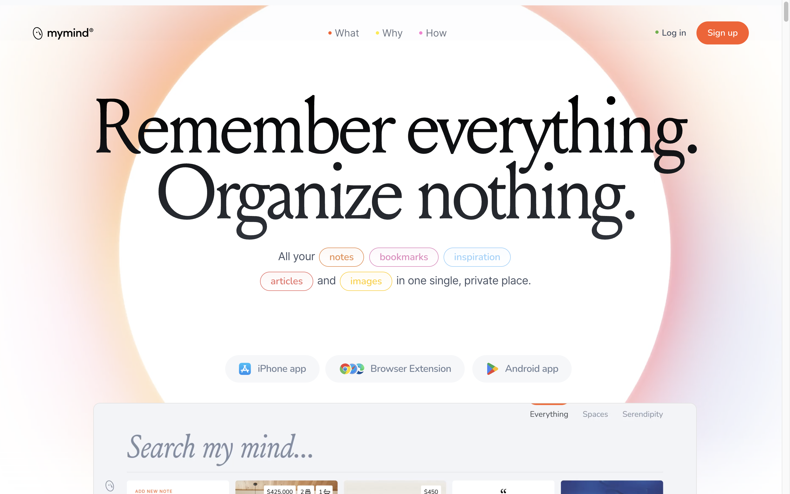
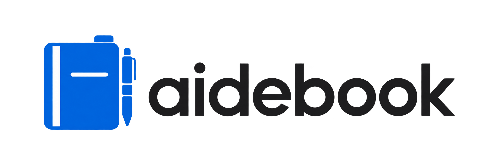
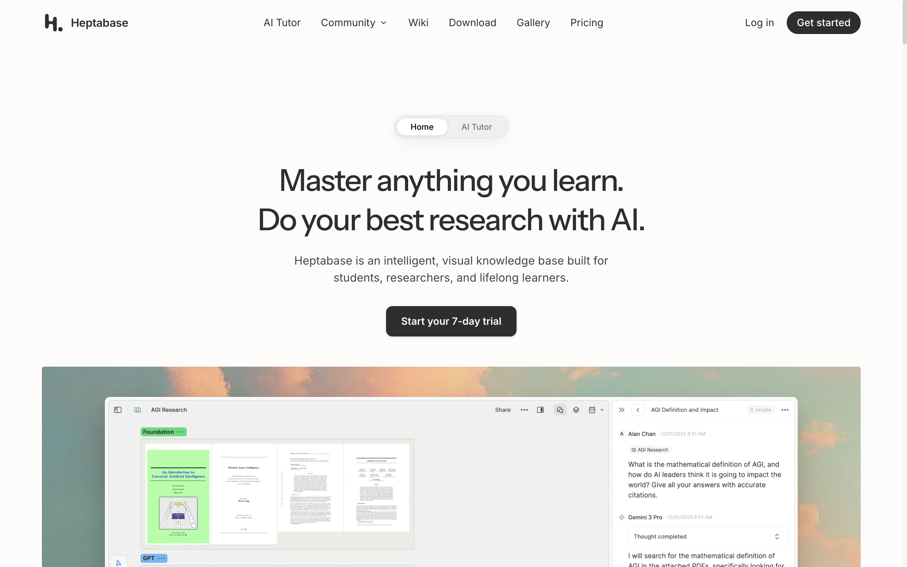
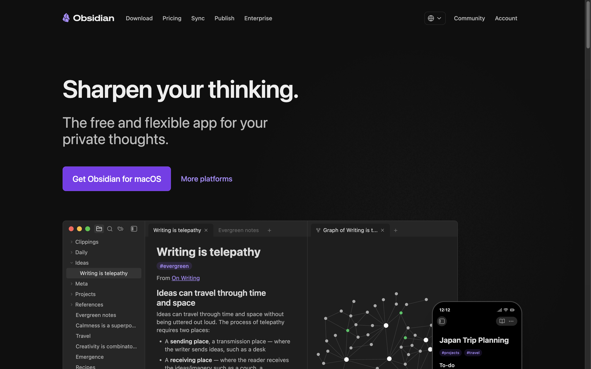

01 / TONE & TYPOGRAPHY
mymind
기억이라는 추상적인 가치를 큰 제목 하나로 전달합니다. 여백과 세리프 글자가 개인적인 공간의 인상을 만듭니다.
적용: “다음 대화도, 이어서.”라는 짧은 제목, 옅은 청백색 배경, 읽는 속도를 늦추는 여백.
조정: 다채로운 후광 대신 남색과 연한 파란색으로 근거 중심의 차분한 톤을 만듭니다.
공식 홈페이지 ↗
홈페이지 보기 ↗Aidebook은 AI 비서의 기억과 원본 근거를 연결하는 로컬 노트입니다. 개인 지식 도구의 편안함, 관계를 이해시키는 제품 데모, 데이터 통제권을 설명하는 문장을 세 가지 기준으로 레퍼런스를 골랐습니다. 아래 이미지는 공식 홈페이지의 실제 브라우저 캡처입니다.

기억이라는 추상적인 가치를 큰 제목 하나로 전달합니다. 여백과 세리프 글자가 개인적인 공간의 인상을 만듭니다.
적용: “다음 대화도, 이어서.”라는 짧은 제목, 옅은 청백색 배경, 읽는 속도를 늦추는 여백.
조정: 다채로운 후광 대신 남색과 연한 파란색으로 근거 중심의 차분한 톤을 만듭니다.
공식 홈페이지 ↗
크게 배치한 제품 화면과 자료별 예시로 시각적 지식 도구의 사용법을 설명합니다.
적용: 첫 화면 바로 아래에 자료, 기억, 근거 패널을 한눈에 보는 대형 인터랙티브 데모.
조정: 복잡한 전체 화면 대신 하나의 결정을 둘러싼 세 가지 자료만 보여줍니다.
공식 홈페이지 ↗
개인의 생각, 기기 내 저장, 오래 유지되는 데이터라는 메시지를 구체적으로 설명합니다.
적용: 로컬 보관, 읽기 전용 연결, 사용자 검토를 홈페이지의 독립된 핵심 영역으로 배치.
조정: 다크 테마나 다운로드 유도 대신 밝은 청백색 노트의 분위기와 현재 개발 단계에 맞는 데모 CTA.
공식 홈페이지 ↗파란 앱 아이콘과 이어지는 청백색 바탕 위에 노트와 근거 카드가 연결되는 느낌. 장식보다 출처와 결정의 이유에 시선이 머물게 합니다. 레퍼런스의 자산을 제품 홈페이지에 재사용하지 않고, 제공된 Aidebook 공식 로고·앱 아이콘과 자체 HTML·CSS·SVG 데모로 구성했습니다.
페이지 흐름: 제품의 한 문장 → 연결된 맥락 데모 → 해결하는 문제 → 연결·검토·조회 → 데이터 통제권 → FAQ → 데모로 돌아가기. 배포 전인 현재는 가입 수집이나 사용할 수 없는 다운로드 링크를 두지 않습니다.
캡처: 2026년 9월 22일. 각 화면과 브랜드의 권리는 해당 서비스에 있습니다. 이 보드는 내부 디자인 검토용이며 검색 색인을 차단합니다.